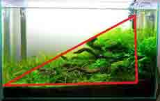
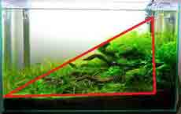
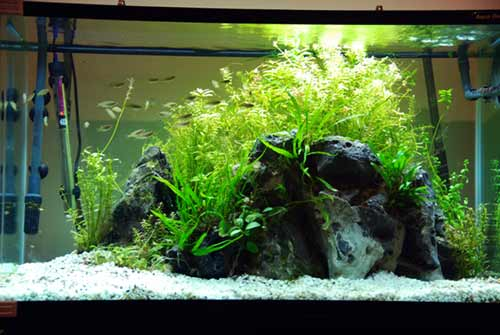
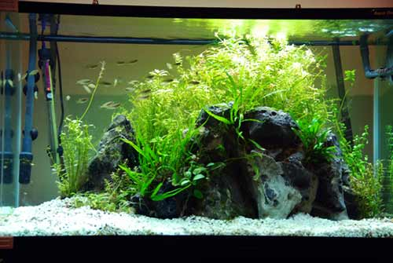
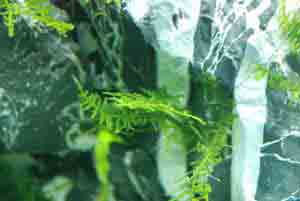
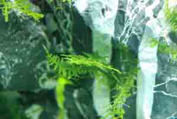
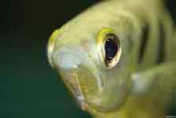

Aquascaping is a learned art form that allows you to create an underwater landscape, inspiration for many works come from both underwater locations but also natural scenes such as mountains, jungles, deserts, waterfalls and many others.
Designing an aquascape can be challenging. Aquascaping involves using basic principles of design and applying them to the aquarium. Browsing other aquascapes can help you decide what style and layout you enjoy the most. To aid in your designing process this page is filled with some stunning examples of aquascaping.
To know Mother Nature, is to love her smallest creations
Takashi Amano
Before we jump in and explore aquascaping you will need a functioning aquarium environment. Aquascaping setups can differ significantly from standard tropical setups. This is because some aquatic plants require stronger lighting and nutrient rich substrates to thrive.
Each link below walks through an important parameter to consider when setting up your aquascape or converting your current aquarium to a planted one. Low maintenance aquascapes have since become popular in the hobby. These utilize minimal CO2, less fertilizer supplementation and low wattage lighting. Lower lighting setups can be just as stunning but are limited to a smaller variety of plants. These usually include ferns, moss, crypts and anubias.
After placing your substrate, connecting up your CO2 and turning on your lights on you are almost ready to go. Below we will run through some fundamentals of design and aquascaping.

Now it’s time to aquascape. Before we start it’s important to remember that the biggest factor in Aquascaping is patience and imagination. Use inspiration from other works, sketches, models and mockups. Spend your time planning your idyllic aquascape. You will find out it is not as hard as you may think to create something truly inspiring. Remember, nothing is concrete. If you design something, create it and dislike it, take it down! Destroy and rebuild it as many times as you want until you are satisfied with your own box of nature.
Aquascaping is inspired by natural landscapes. Grassy hills, rocky canyons and pebble streams are commonly recreated. Below are two photographs from nature that could inspire your next aquascape.
This image above of rocky steeples and trees could be seen to be similar to the first image on this page. Trees have been substituted for a foreground plant and the lake has been substituted for the substrate in the aquarium.
An open channel in the center of the image has become a common theme among modern aquascapes. This photo, taken in Iceland is a beautiful wild location that could be used as the inspiration for an aquascape. The steep built up cliffs could be substituted with rocks covered in a fine leaved Christmas or Java moss.
Iwagumi aquariums represents minimalism, Japanese culture and ideology. They are bold yet subtle and sharp while maintaining softer elements. Generally larger and intricate stones are placed in focal points. These are the most beautiful stones and can be tilted with water flow to mimic a natural environment.
Iwagumi aquascapes will often use only low foreground plants. Emphasis is put on the rocks and not the plants in an Iwagumi setup. Dark and intricate rocks are highly sought after for these aquascapes.
Dutch style aquascapes are about the plants. In a traditional Dutch Aquascape there is far less emphasis on the rocks and wood. The choice of plants, color of the plants and their arrangement is by far the most important.
Dutch aquascapes are a popular style as they can be visually stunning. They are often filled with bright red, orange and green plants that fill the foreground, middle and background. Dutch aquascaping is also known for housing unusual and difficult plant species. Generally dutch aquascapes are the most time intensive and difficult to maintain.
Natural style aquascapes attempt to recreate a section of nature. Plants, wood and rocks are arranged to look like a stream or lake. They are very popular and often have an 'unruly' characteristic to them. Most modern aquascapes follow a natural style.
The arrangement of the plants, wood and stones is the most important. The fish are just complementary in aquascaping. Being able to create a simulated natural environment is difficult and requires planning. Plants in these aquascapes are often purchased small and attatched to the wood, rocks or substrate to grow into the aquarium. A school of small fish are usually chosen to give the aquascape added size and movement.
Becoming frustrated – lets face it, you have seen countless beautiful aquascapes over the internet. Just remember many of these tanks have taken hours of hard work and patience. Your aquascape will get there too.
Using few plant species – don't fall into the trap of using just one or two species of plants. Aquascaping is about exploring with the diversity of flora and hardscape to produce a beautiful aquarium – mix it up and experiment with a range of species.
Using too many plants with large leaves - larger plants have their time and place but will make your aquascape seem shallower and small. The finer the leaves on the plants you use, the larger your scape will seem.
Keep it simple stupid – negative space is sometimes your best friend. Avoid feeling like you have to fill every open space with plants or rocks. Often the best aquariums are those which are the most simple.
Avoid Symmetry - Symmetry is not wanted in planted tanks as symmetry results in the aquascape looking too structured and neat. The aim is to mimic a natural environment. In the wild plants rocks would be littered around the river bank and plants would not be in a line or pattern. Try not to create patterns and avoid a symmetrical aquascape.
Off Center Focal Point The central focus should not be in the middle of the aquarium but slightly off center. Using the golden ratio (A ratio that has long been accepted as mathematically aesthetic) the optimum focal point should be around 1 : 1.62 of the tanks length.
In the Aquascape above, the focus is toward the left hand side of the aquarium. The Aquascape is clearly not symmetrical and results in a beautiful layout.
Arrange your aquscape to have an off center focus point.
Calculating the Golden Ratio - Measure the length of the aquarium with a tape measure. Divide the length by 100. Multiply your answer by 61.8 and write it down. Now measure from one side of the aquarium and make a small mark when you reach this new length. This should be the focal point of your aquascape.
What should be in the focal point? – The focal point should be the largest, brightest or most impressive point of your aquascape. This can be the tallest rock, a bright red plant, a large piece of driftwood or a channel to the back of the aquarium.
Avoid straight lines and 'hedging plants' - High plants in the background that extend the length of the tank is not recommended. Nature often has very few straight lines and little continuity. The best shapes are those that follow a smooth curve or are seemingly random.
Natural curves and concavity is good - plants can easily be trimmed to be high on the edges and then lower in the middle making a dip. This will allow for more open space in the middle of the aquascape, encouraging your fish to swim there.
.jpg) 


Sloping setups can be very attractive - The triangular setup or island setup can be effective and aesthetic. The sloping gradient looks similar to a riverbed that is gradually getting deeper.
Have defined layers - It is important to distinguish between each layer of the aquarium. Background should be filled with the largest and tallest plants. The Middleground should house driftwood, rocks and medium sized plants. The foreground should have fine leaved substrate plants such as HC and hairgrass.
Blend layers appropriately - Blend each of the layers by interlayering some of the plant species. Rocks and wood can extend to the background and foreground and plants should be dotted between each of the layers to improve the natural illusion.
 

Break the surface with an open top aquascape - If your aquarium is open top, do not be afraid to use driftwood that extends past the water column.
Maintain plenty of open space - Mountain style scapes should only take up a small portion of the aquascape. Negative space in aquascaping is key to creating a balanced environment.
Make the mountain off-center - Do not have the mountain in the exact center of the tank. Above we discussed the importance of having the focal point off center, situated about 61% of the tanks length. Try not to push the mountain in the corner. The space around the shape will create better water flow for your plants and fish.
Rock Consistency - When starting out it is beneficial to stick to one type of rock when aquascaping. The same goes for driftwood. Multiple rock types (excluding use of smaller river stones etc.) make the aquascape harder to work with.
Plant Choice is Very Important - Plant choice is very important in aquascaping. Some species of plants will have very different care requirements and may not be compatible with other species. It is important to carefully research and prepare which plants you want to keep in your aquarium. Take into account size, shape, color and lighting requirements. This article on the 5 best aquascaping plants outlines some of the most popular aquascaping plants and their requirements.
Use Red and Orange plants Sparingly - Red and orange plants contribute to the vibrance of the aquascape. It is important to note that bright red plants such as Red Tiger Lotus' can become the central focal point. It is recommended to always try to keep the planting balanced when using large or brightly colored plants. you may unknowingly draw the viewers attention away from your driftwood, plants and fish.
 


Use a Diverse Range of Small Leaved Plants - Diversity of plant species in the aquarium will help to create a natural aquascape. Pick mixed plant species of lighter and darker greens. This will help your aquascape to look less structured. The size of the leaves will change the look of the tank, large leaves will make the tank look smaller but smaller leaves will make the tank look much bigger than what it actually is. Be careful not to clump all of each plant type together, this looks more like a store than an aquarium.
Plan your Aquascape - Before planting it is very important to plan your aquascape . Decide on which plants you want, how big these plants will grow and where they will be planted.
Plant from the background to foreground - It will be easier to plant if you begin at the back of the tank and work down toward the front. The larger stem plants are easier to plant and will often be undisturbed when planting intricate and small foreground plants.
Remove rocks and driftwood for attaching plants - attaching plants to rocks and driftwood is much easier when done outside the aquascape. Use aquarium safe glue, string and wire to keep mosses and ferns in place.
Always attach non-root plants - Moss, ferns and crawling plants need to be attached to hard scape. This should be done with super glue or string/wire as mentioned above. Plants not planted in the substrate or attached to hardscape will inevitably float away and become caught in the filter.
Plant sparsely - Allow the plants in your aquascape to grow into the empty spaces. Your aquascape will tend to look more natural and you will save money in the early stages. Stem plants and foreground plants should be planted in a 1" grid. Ferns and slower growing plants can be planted closer together.
Use Tweezers - Using tweezers will increase your speed and accuracy in planting. It will also help to bury the root system without damaging the plant. These are essential for planting foreground plants such as Hairgrass and HC.
Fish are the complement - In Aquascaping fish are not the focal point but a complement to the planted environment. Aquascaping is generally compatible with most fish species. Tetra's, Discus, Angelfish, Australian Rainbows and livebearers are all great choices. While Cichlids and high pH fish are generally not recommended. This article 'The 10 best Aquascaping Fish' has a close look at some of the popular choices. Small, schooling fish are ultimately very popular in aquascaping. Small fish can give the illusion of a much larger aquarium. While schooling fish add a sense of unity to the aquascape.
Schooling Fish are Recommended - Good examples of schooling fish include most Tetras and dwarf varieties of Australian Rainbow Fish. Threadfin Rainbowfish, Praecox Rainbowfish and other dwarf varieties will school in larger groups in a suitably sized aquarium. Ember Tetra's have also gained in popularity. This is most likely due to their small size, bright coloration and schooling personality.


Small Fish make the Aquarium Bigger - Choose smaller fish to make the aquascape seem larger. Incredibly, the first image on this page is a tank little more than 12 inches in length. The fine leaves of the HC carpet and the tiny school of Ember Tetra's give the illusion of a tank at least 3 feet in length!
Colorful Fish are not Essential - Colourful fish are recommended but not essential, with lots of plants the fish are not the predominant feature and there colors will not show as brightly. They add the movement to your stunning aquascape. Please leave your comments and added suggestions below!